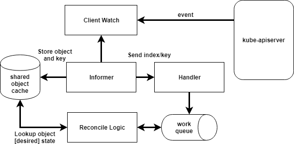

Controllers and Operators
Over the last two years I’ve observed many humans journey into the world of Kubernetes. As core concepts such as reconciliation starts to solidify, we naturally move into the realm of operators. Usually this introduces some confusion. Namely, how is an operator different than a controller? In this post I’m going to attempt to address the difference (or lack thereof).
Controllers
A core principle of Kubernetes is control
theory. Without getting too
academic, Kubernetes offers a declarative API for creating desired state.
Controllers incrementally move the current state toward that desired state. This
process is often referred to as
reconciliation.
The kube-controller-manager is where many of the core Kubernetes controllers
live. For example, the replicaset-controller. This controller is responsible
for ensuring the number of pods created matches the desired count set in
replicas. Consider the following simplified control loop that represents how
this controller functions.
This diagram is not an accurate representation of the replicaset-controller.
It is only meant to visually demonstrate a control loop.
Following this reconciliation model, many extend Kubernetes by introducing their own custom controllers. Historically, you would use the library client-go. The most common pattern contained 2 main components, a shared (thread-safe) cache and an informer. You register informers for specific types. As events occur (additions, deletions, and modifications) you can queue those events. Then you pop events off this queue and lookup the object’s full desired state in the shared cache. Lastly, the most important part, is your evaluation of the how the current state compares to the desired state. Then your controller takes the necessary step(s) to close the gap. The following diagram shows a simplified view of this model.
This diagram is not a technically accurate representation of a client-go flow. For detailed technical flows and examples see sample-controller and CloudARK's Writing Kubernetes Custom Controllers Medium post.
As of 2019, there are several frameworks that prevent you from worrying about the boilerplate involved in creating informers and caches. This allows you to focus solely on reconciliation logic. Two of these projects are kubebuilder and operator-sdk. The differences warrant another post, but if you are looking to build a controller for Kubernetes, these are projects worth exploring.
Operators
Operators are controllers. The differentiation, in my view, is that operators embody specific characteristics not common to all controllers. As the name implies, or confuses, they codify the operational knowledge required to run a workload. Consider your favorite database, to run it in an HA manner, it likely requires some coordination to ensure replicas are operating as expected. In the operator model, take mysql for example, a mysql-operator would run in the cluster. Using an operator-specific API, exposed as a Custom Resource Definition (CRD), a user submits a mysql object to Kuberneres. Then the operator creates and configures the pods to run a cluster. Here, we can imagine the same reconciliation described above. A CRD represents the desired state and an operator makes it happen. Operators often go beyond just the creation of pods. They commonly manage the lifecycle of the workloads they are responsible for. This could include upgrading, healing, scaling, and more.
In summary, for me, a controller with the following characteristics qualifies as an operator.
-
Contains workload-specific knowledge
-
Manages workload lifecycle
-
Offers a CRD
Naturally, there is immense value in this model for stateful workloads. Often these workloads require complex bootstrapping, maintenance, and general domain knowledge to operate. Two of the early operators were etcd and prometheus. Operators are an excellent model for internal teams to provide services a-top Kubernetes to their larger organizations. It is also an opportunity for software vendors to provide codified best practices for how to run their applications in a Kubernetes cluster. RedHat introduced operatorhub.io as a registry of operators. If you work in the realm of Kubernetes, operators are worth keeping your eyes on. As bootstrapping and maintaining Kubernetes becomes more boring (PLEASE, PLEASE, become more boring) I think a lot of interesting work will move to this part of the stack.
Hopefully that helps your understanding of operators and controllers. Or maybe you've identified areas where you have different views. If so, tell me about them!